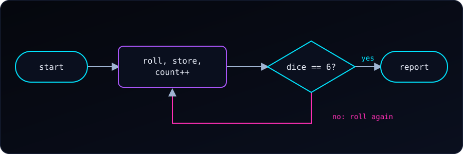

We are going to toss a die and track every output, while waiting for 6 to appear.

New to srand(time(NULL))? See why it seeds the generator first. Each program below is hidden by default. Try it yourself first: open See hint if we get stuck, and press Reveal to check our answer.
Track Every Roll
The simplest approach is to print inside the loop. This shows each roll as it happens:
- Seed the generator once:
srand(time(NULL)). - Start with
dice = 0andcount = 0. - Repeat while
dice != 6: - Roll:
dice = rand() % 6 + 1. - Add 1 to
count. printfthe step number and the roll.- After the loop, print
count.
#include <stdio.h>
#include <stdlib.h>
#include <time.h>
int main(void) {
srand(time(NULL));
int dice = 0;
int count = 0;
while (dice != 6) {
dice = (rand() % 6) + 1;
count++;
printf("Step %d: rolled %d\n", count, dice);
}
printf("We have 6, in %d steps.\n", count);
return 0;
}Example output:
Step 1: rolled 3
Step 2: rolled 1
Step 3: rolled 5
Step 4: rolled 6
We have 6, in 4 steps.This is the fastest way to see each value. But it prints as it goes — you can’t review the sequence afterward, and the numbers scroll past.
Better: Store the Rolls in an Array
If you want to keep the full history and print it at the end (e.g., to analyze it), use an array:
- Make an array
rolls[100]and setcount = 0,dice = 0. - Repeat while
dice != 6andcount < 100: - Roll the die.
- Save it:
rolls[count] = dice. - Add 1 to
count. - After the loop, a
forloop from0tocount - 1prints each stored roll. - Print
count.
#include <stdio.h>
#include <stdlib.h>
#include <time.h>
int main(void) {
srand(time(NULL));
int rolls[100]; // assume no more than 100 rolls
int count = 0;
int dice = 0;
while (dice != 6 && count < 100) {
dice = (rand() % 6) + 1;
rolls[count] = dice;
count++;
}
printf("Roll history: ");
for (int i = 0; i < count; i++) {
printf("%d", rolls[i]);
if (i < count - 1) printf(", ");
}
printf("\n");
printf("We have 6, in %d steps.\n", count);
return 0;
}Example output:
Roll history: 3, 1, 5, 6
We have 6, in 4 steps.Why the count < 100 check? If rand() somehow never returns 6 (theoretically possible, practically absurd), the loop would run forever and overflow the array. This guards against that.
Even Better: Tally the Frequencies
If your goal is to know how many times each number appeared, use an array indexed by the value:
- Make
frequencies[7], all zeros (index 0 unused). - Repeat while
dice != 6: - Roll the die.
- Tally it:
frequencies[dice]++. - Add 1 to
count. - After the loop, a
forfrom face 1 to 6 printsfrequencies[face]. - Print
count.
#include <stdio.h>
#include <stdlib.h>
#include <time.h>
int main(void) {
srand(time(NULL));
int frequencies[7] = {0}; // index 0 unused; counts for 1-6
int count = 0;
int dice = 0;
while (dice != 6) {
dice = (rand() % 6) + 1;
frequencies[dice]++;
count++;
}
printf("Roll frequencies:\n");
for (int face = 1; face <= 6; face++) {
printf(" %d: %d times\n", face, frequencies[face]);
}
printf("Total rolls: %d\n", count);
return 0;
}Example output:
Roll frequencies:
1: 2 times
2: 0 times
3: 1 times
4: 0 times
5: 1 times
6: 1 times
Total rolls: 5This is the pattern used constantly in data analysis — counting occurrences per category. In R this is table(); in Python it’s collections.Counter(); in C you build it yourself with an array.
The Note About frequencies[7]
You’ll notice the array is size 7, not 6. That’s because array indices in C start at 0, but dice faces are 1–6. So we waste index [0] and use indices [1] through [6]. This is a small, harmless price for readable indexing.
The alternative — frequencies[dice - 1] — packs the array to size 6 but means every access has a -1 in it. Both are common; I prefer the size-7 version for clarity.
Finally: Which Steps Gave Each Face?
Now we want more than counts: for each face, which steps produced it? We store the rolls in an array, then scan the array once per face and print the step numbers that match.
- Store every roll in
rolls[]as before; keepcount. - For each
facefrom 1 to 6: - Print the face.
- Scan
stepfrom 0 tocount - 1. - If
rolls[step] == face, printstep + 1. - Print a newline before the next face.
#include <stdio.h>
#include <stdlib.h>
#include <time.h>
#define MAX_ROLLS 100
int main(void) {
srand(time(NULL));
int rolls[MAX_ROLLS];
int count = 0;
int dice = 0;
while (dice != 6 && count < MAX_ROLLS) {
dice = (rand() % 6) + 1;
rolls[count] = dice;
count++;
}
for (int face = 1; face <= 6; face++) {
printf("%d:", face);
for (int step = 0; step < count; step++) {
if (rolls[step] == face) {
printf(" %d", step + 1);
}
}
printf("\n");
}
return 0;
}Example output:
1: 2
2: 3 4
3: 5
4:
5: 1
6: 6Read it as: the first roll was a 5, the second a 1, the third and fourth were 2s, the fifth a 3, and the sixth finally gave the 6. A face that never appeared (here, 4) just gets an empty list.
The outer loop picks a face and the inner loop scans the history, so the work is 6 × count comparisons. That is nothing for a die, but for many categories you would tally in one pass instead, as in the frequency array above.
Which Approach to Choose?
| Goal | Use |
|---|---|
| Just see each roll as it happens | printf inside the loop |
| Store history to review/analyze later | Array of rolls |
| Count how often each face appears | Frequency array |
| Both history and frequency | Combine: store rolls in one array, tally in another |
| Which steps produced each face | Store the rolls, then scan once per face |